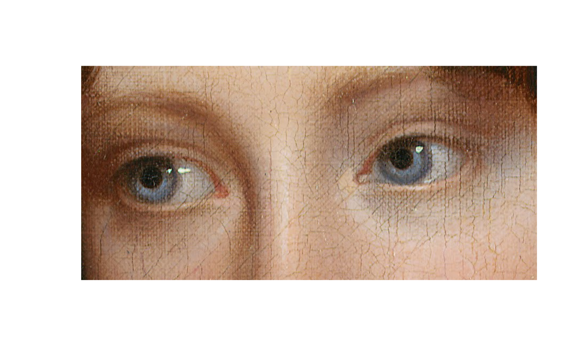
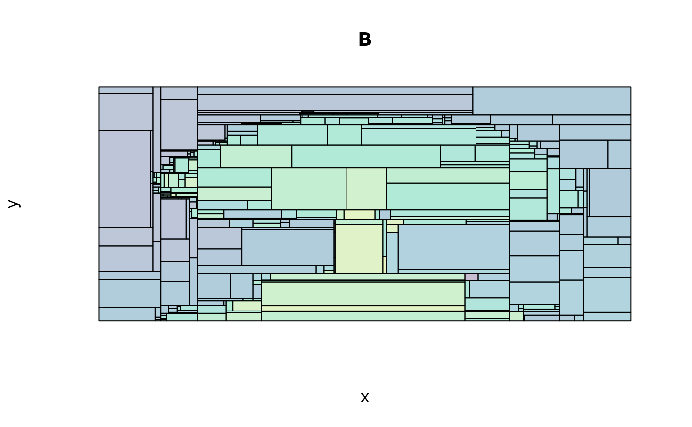
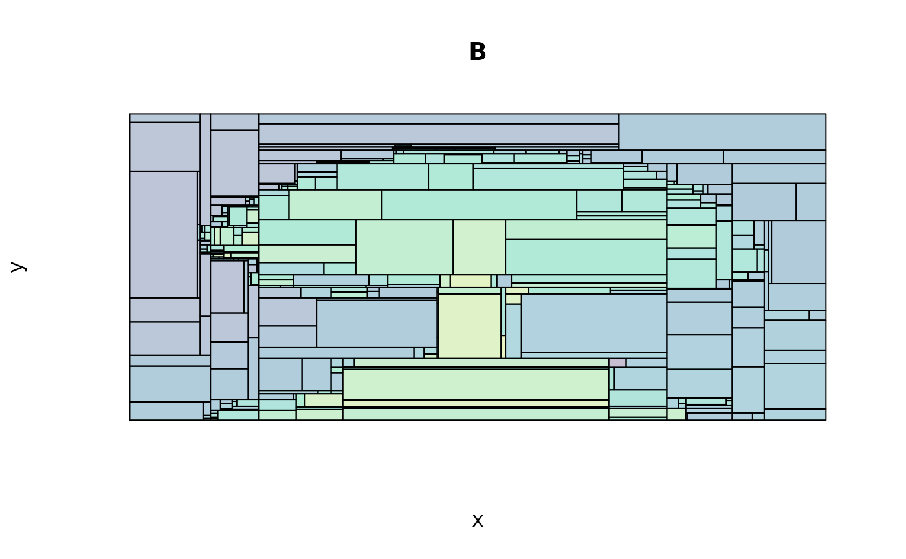

Background
One fun application of tree-based methods is abstracting over art and other images. For some really striking examples, take a look at the portfoilo of Dimitris Ladopoulos. This vignette will show you how to implement the same basic ideas using parttree and a few friends. Here are the packages that we’ll be using.
library(parttree) # This package
library(rpart) # For decision trees
library(magick) # For reading and manipulating images
library(imager) # Another image library, with some additional features
op = par(mar = c(0,0,0,0)) # Remove plot margins
magick:::magick_threads(2)
#> [1] 2While the exact details will vary depending on the image at hand, the essential recipe for this type of art abstraction is as follows:
- Convert the image to a matrix (or data frame), where rows and columns correspond, respectively, to the X and Y coordinates of individual pixels. In other words, each cell in our matrix (data frame) represents the colour values of an individual pixel.
- Split the data by primary (RGB) colour channels. We should now have three matrices (data frames), where each cell represents the red/green/blue colour channel value of an individual pixel.
- Run a tree model on our three RGB datasets. In each case, we are trying to predict the relevant colour channel value as a function of the X and Y coordinates.
- Use the predicted values to plot the abstracted art piece! (Okay, this step requires a bit more work, but we’re about to see how it works in practice…)
Example 1: Peale’s “Portrait of Rosalba”
Our first example, will mimic one of Dimitri Ladopoulos’s aforementioned portrait pieces. Specifically, we will abstract over a close-up (eyes only) of Rembrandt Peale’s portrait of his daughter, Rosalba.
{kind=link}
We can download a digital image of the original artwork from Wikimedia. I’ll download a high-res version to show off, but feel free to go for a lower resolution if you want to reduce modeling and plotting times.1 However, I will crop the image around Rosalba’s eyes to get a close-up and reduce the overall complexity of the exercise.2
# Download the image
rosalba = image_read("https://upload.wikimedia.org/wikipedia/commons/a/aa/Rembrandt_Peale_-_Portrait_of_Rosalba_Peale_-_Google_Art_Project.jpg")
# Crop around the eyes
rosalba = image_crop(rosalba, "850x400+890+1350")
# rosalba = image_crop(rosalba, "750x350+890+1350")
# Convert to cimg (better for in-memory manipulation)
rosalba = magick2cimg(rosalba)
# Display
rosalba
#> Image. Width: 850 pix Height: 400 pix Depth: 1 Colour channels: 3
plot(rosalba, axes = FALSE)
With our cropped image in hand, let’s walk through the 4-step recipe from above.
Step 1. Convert the image into a data frame.
# Coerce to data frame
rosalba_df = as.data.frame(rosalba)
# Round color values to ease up work for decision tree
rosalba_df$value = round(rosalba_df$value, 4)
head(rosalba_df)
#> x y cc value
#> 1 1 1 1 0.3059
#> 2 2 1 1 0.3059
#> 3 3 1 1 0.2627
#> 4 4 1 1 0.2471
#> 5 5 1 1 0.3137
#> 6 6 1 1 0.2941Step 2. Split the image by RGB colour channel. This
is the cc column above, where 1=Red, 2=Green, and
3=Blue.
rosalba_ccs = split(rosalba_df, rosalba_df$cc)
# We have a list of three DFs by colour channel. Uncomment if you want to see:
# str(rosalba_css)Step 3. Fit a decision tree (or similar model) on each of our colour channel data frames. The tuning parameters that you give your model are a matter of experimentation. Here I’m giving it a low complexity parameter (so we see more variation in the final predictions) and trimming each tree to a maximum depth of 30 nodes. The next code chunk takes about 15 seconds to run on my laptop, but should be much quicker if you downloaded a lower-res image.
## Start creating regression tree for each color channel. We'll adjust some
## control parameters to give us the "right" amount of resolution in the final
## plots.
trees = lapply(
rosalba_ccs,
# function(d) rpart(value ~ x + y, data=d, control=list(cp=0.00001, maxdepth=20))
function(d) rpart(value ~ x + y, data=d, control=list(cp=0.00002, maxdepth=20))
)Step 4. Use our model (colour) predictions to construct our abstracted art piece. I was bit glib about it earlier, since it really involves a few sub-steps. First, let’s grab the predictions for each of our trees.
pred = lapply(trees, predict) # get predictions for each treeWe’re going to use these predictions to draw the abstracted
(downscaled) version of our image.3 Probably the easiest way to do this is by
taking the predictions and overwriting the “value” column of our
original (pre-split) rosalba_df data frame. We can then
coerce the data frame back into a cimg object, which comes
with a bunch of nice plotting methods.
# The pred object is a list, so we convert it to a vector before overwriting the
# value column of the original data frame
rosalba_df$value = do.call("c", pred)
# Convert back into a cimg object, with the predictions providing pixel values
pred_img = as.cimg(rosalba_df)
#> Warning in as.cimg.data.frame(rosalba_df): Guessing image dimensions from
#> maximum coordinate valuesNow we’re ready to draw our abstracted art piece. It’s also where parttree will enter the fray, since this is what we’ll be using to highlight the partitioned areas of the downscaled pixels. Here’s how we can do it using base R graphics.
# get a list of parttree data frames (one for each tree)
pts = lapply(trees, parttree)
## first plot the downscaled image...
plot(pred_img, axes = FALSE)
## ... then layer the partitions as a series of rectangles
lapply(
pts,
function(pt) plot(
pt, raw = FALSE, add = TRUE, expand = FALSE,
fill_alpha = NULL, lwd = 0.1, border = "grey15"
)
)#> $`1`
#> NULL
#>
#> $`2`
#> NULL
#>
#> $`3`
#> NULLWe can achieve the same effect with ggplot2 if you prefer to use that.
library(ggplot2)
ggplot() +
annotation_raster(pred_img, ymin=-Inf, ymax=Inf, xmin=-Inf, xmax=Inf) +
lapply(trees, function(d) geom_parttree(data = d, lwd = 0.05, col = "grey15")) +
scale_x_continuous(limits=c(0, max(rosalba_df$x)), expand=c(0,0)) +
scale_y_reverse(limits=c(max(rosalba_df$y), 0), expand=c(0,0)) +
coord_fixed(ratio = Reduce(x = dim(rosalba)[2:1], f = "/") * 2) +
theme_void()Example 2: parttree logo
Now that we’ve walked through a detailed example, let’s quickly go through one more. We’re about to get very meta: Visualizing the decision tree partitions of an actual tree image. This also happens to be the basis for the parttree logo, which seems a nice way to bookend the vignette.
{kind=link}
Here are the main image conversion, modeling, and prediction steps. These follow the same recipe that we saw in the previous portrait example, so I won’t repeat my explanations.
bonzai = load.image("https://upload.wikimedia.org/wikipedia/commons/thumb/0/0c/Japanese_Zelkova_bonsai_16%2C_30_April_2012.JPG/480px-Japanese_Zelkova_bonsai_16%2C_30_April_2012.JPG")
plot(bonzai, axes = FALSE)
# Coerce to data frame
bonzai_df = as.data.frame(bonzai)
# Round color values to ease up work for decision trees
bonzai_df$value = round(bonzai_df$value, 2)
# Split into colour channels
bonzai_ccs = split(bonzai_df, bonzai_df$cc)
# Fit decision trees on each colour channel DF. Note that I'm deliberating
# truncating the max tree depth to reduce the number of partitions.
bonzai_trees = lapply(
bonzai_ccs,
function(d) rpart(value ~ x + y, data=d, control=list(cp=0.00001, maxdepth=10))
)
# Overwrite value column with predictions vector
bonzai_df$value = do.call("c", lapply(bonzai_trees, predict))
# Convert back into a cimg object, with the predictions providing pixel values
bonzai_pred_img = as.cimg(bonzai_df)
#> Warning in as.cimg.data.frame(bonzai_df): Guessing image dimensions from
#> maximum coordinate valuesAt this point you may tempted to plot the figure with
plot(bonzai_pred_img), which would definitely work.
However, I’m going to show you one additional tweak to make the
partition rectangles look a bit nicer: Use mean color channel values
instead of black. Here’s a function for grabbing this information from a
cimg object that has been converted to a data frame.4
mean_cols = function(dat) {
mcols = tapply(dat$value, dat$cc, FUN = "mean")
col1 = rgb(mcols[1], mcols[2], mcols[3])
hicol = function(x) mean(x) + 0.4*sd(subset(dat, cc==1)$value)
col2 = rgb(hicol(subset(dat, cc==1)$value), hicol(subset(dat, cc==2)$value), hicol(subset(dat, cc==3)$value))
locol = function(x) mean(x) - 0.4*sd(subset(dat, cc==1)$value)
col3 = rgb(locol(subset(dat, cc==1)$value), locol(subset(dat, cc==2)$value), locol(subset(dat, cc==3)$value))
return(c(col1, col2, col3))
}
bonzai_mean_cols = mean_cols(bonzai_df)The penultimate step is to generate parttree objects
from each of our colour channel-based trees.
bonzai_pts = lapply(bonzai_trees, parttree)And now we can plot everything together.
plot(bonzai_pred_img, axes = FALSE)
Map(
function(pt, cols) {
plot(
pt, raw = FALSE, add = TRUE, expand = FALSE,
fill_alpha = 0, lwd = 0.2, border = cols
)
},
pt = bonzai_pts,
cols = bonzai_mean_cols
)#> $`1`
#> NULL
#>
#> $`2`
#> NULL
#>
#> $`3`
#> NULLAgain, equivalent result for those prefer ggplot2.
# library(ggplot2)
ggplot() +
annotation_raster(bonzai_pred_img, ymin=-Inf, ymax=Inf, xmin=-Inf, xmax=Inf) +
Map(function(d, cols) geom_parttree(data = d, lwd = 0.1, col = cols), d = bonzai_trees, cols = bonzai_mean_cols) +
scale_x_continuous(limits=c(0, max(bonzai_df$x)), expand=c(0,0)) +
scale_y_reverse(limits=c(max(bonzai_df$y), 0), expand=c(0,0)) +
coord_fixed() +
theme_void()Postscript
The individual trees for each colour channel make for nice stained glass prints…
lapply(
seq_along(bonzai_pts),
function(i) {
plot(
bonzai_pts[[i]], raw = FALSE, expand = FALSE,
axes = FALSE, legend = FALSE,
main = paste0(c("R", "G", "B")[i]),
## Aside: We're reversing the y-scale since higher values actually
## correspond to points lower on the image, visually.
ylim = rev(attr(bonzai_pts[[i]], "parttree")[["yrange"]])
)
}
) 

#> [[1]]
#> NULL
#>
#> [[2]]
#> NULL
#>
#> [[3]]
#> NULL
# reset the plot margins
par(op)